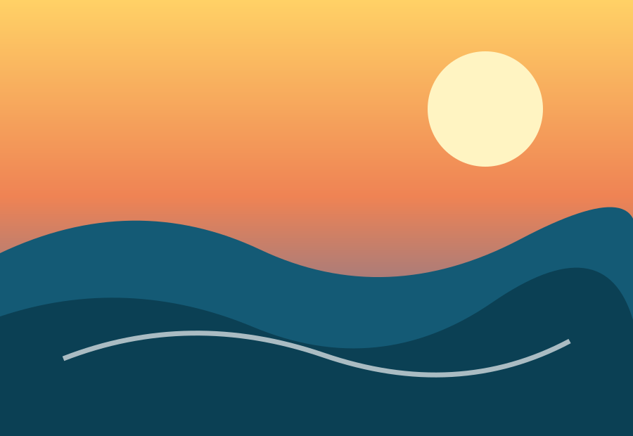
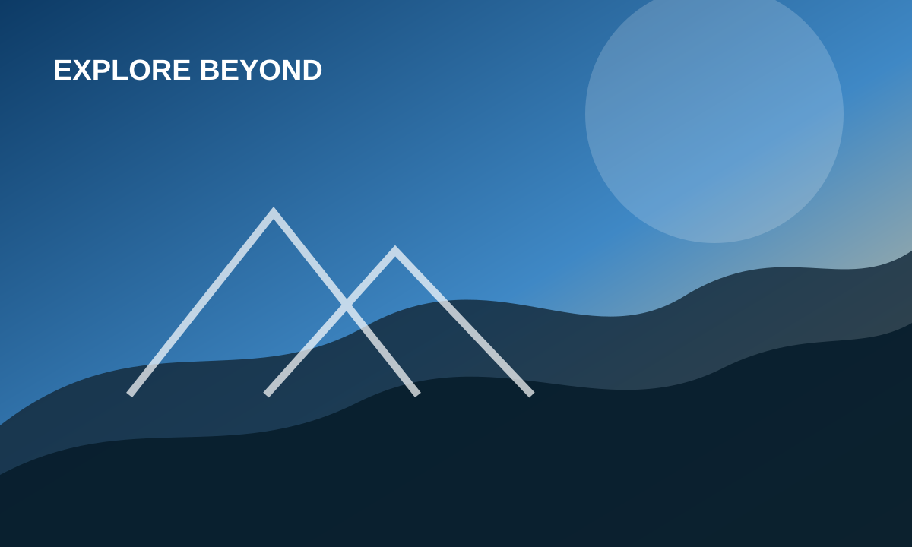
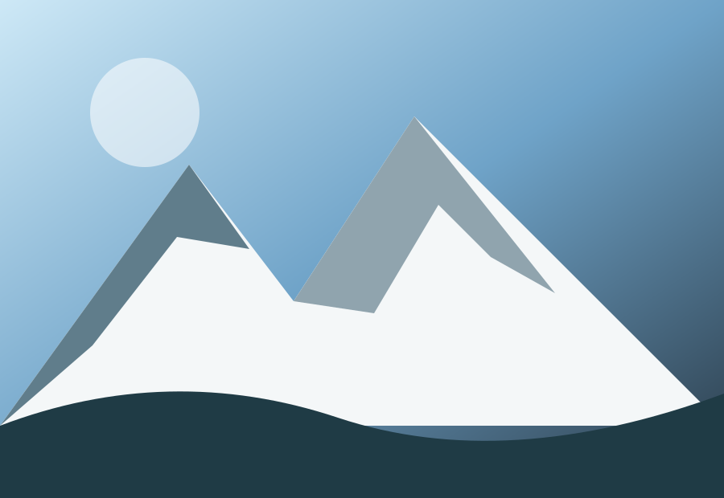
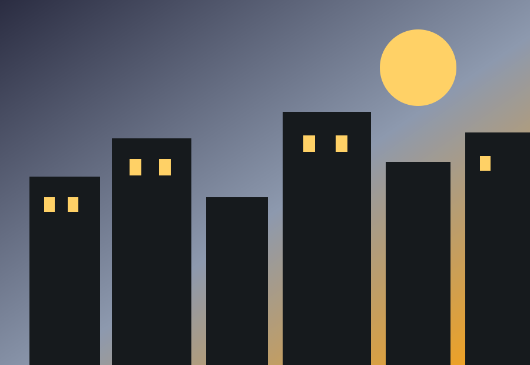

BEACHTRAVEL / DISCOVER / REPEAT
Go somewhere that changes your perspective.
Curated escapes, practical guides and memorable places for people who would rather collect stories than souvenirs.

FEATURED ESCAPEInto the wild
01 — THE NOMAD WAY
Travel should feel personal.
Nomad brings together destination inspiration and practical trip planning in a layout designed to stay useful on wide monitors, tablets and phones.
02 — DESTINATIONS
Where next?
Three different kinds of escape, one flexible browsing experience.

MOUNTAINS
CITY03 — BUILT TO ADAPT
One layout.
Every screen.
The interface uses fluid sizing, flexible grids and breakpoints rather than fixed desktop dimensions. Content reorganizes as available space changes.
DesktopThree-column destination layout
→TabletReduced columns and spacing
→MobileSingle-column, touch-friendly layout
→04 — STORIES